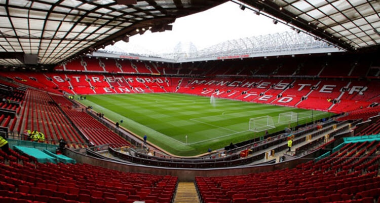
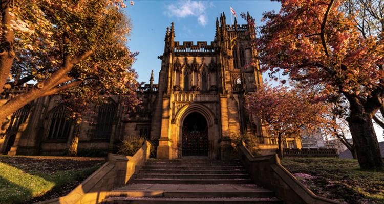
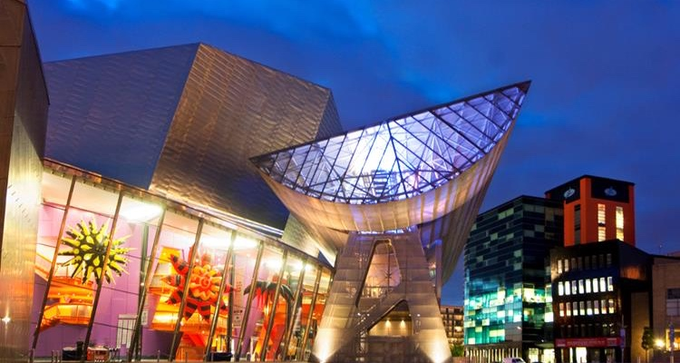
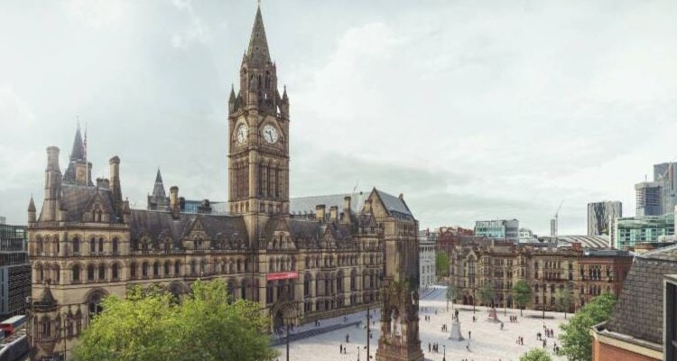

1. Old Trafford Museum and football club
Manchester is perhaps best known for Manchester United Football Club, and fans can get the full experience on a trip to the club’s training ground at Old Trafford. Also known as the Theatre of Dreams, with the field itself dating back to 1910.
Old Trafford officially opened on 19 February 1910 with a match between Manchester and Liverpool (3-4). The stadium at that time consisted of one covered seating stand and open terraces on the other three sides. Capacity was slightly over 80,000. Few changes were made to the stadium until the construction of a roof over the United Road terrace in 1934. In 1939, Old Trafford recorded its highest attendance of 76,962 during an FA Cup semi-final match between Wolves and Grimsby Town.
2. Manchester Cathedral

Dating back to 1215, Manchester Cathedral offers a welcome break from the hustle and bustle of the city.
The official name is actually “The Cathedral and Collegiate Church of St Mary, St Denys and St George” and is one amazing sight that needs to be seen in the city. It’s well worth a wander around to see the gorgeous architecture, especially as it has been so well preserved.
Manchester Cathedral has also thrown open its doors to music events of late. Lamb, Bat for Lashes and even Alicia Keys have all performed gigs there and it makes for an awe-inspiring venue. Other events include bell ringing and quiz nights, so it's great to see the cathedral opening its arms to the wider communities of Manchester.
3. The Lowry

The Lowry is named after Laurence Stephen Lowry (1887 – 1976) – an artist who spent much of his life in Salford and whose work is strongly associated with the city. Salford Museum & Art Gallery had been a long-standing collector of his work and some 400 individual works – as well as an extensive archive of photographs, press cuttings and exhibition catalogues – were transferred to The Lowry on its opening in April 2000. Today, The Lowry provides critical and curatorial analysis of his work and seeks to raise his profile as an artist of international stature.
Lowry was Manchester’s most prominent artist, and this cultural venue is dedicated to showcasing the best of his works. You can see Lowry’s paintings in the main gallery and there are also other shows such as musical performances and theatrical pieces held here from time to time.
4. Albert Square
Get a feel for Manchester’s atmosphere by visiting Albert Square. Located in the heart of the city, the square is of great importance to the people of Manchester and is celebrated for its architecture, history and cultural events. It’s surrounded on three sides by unique heritage-listed buildings, the most impressive of those being the grand Town Hall. Albert Square was laid out in 1863 to make space for a memorial to Prince Albert, the husband of Queen Victoria. His elevated statue, covered by a shrine-like spire, is the biggest monument in the square.
This square is home to the huge and rather impressive Manchester city hall, which is almost reason in itself to pop by the area.